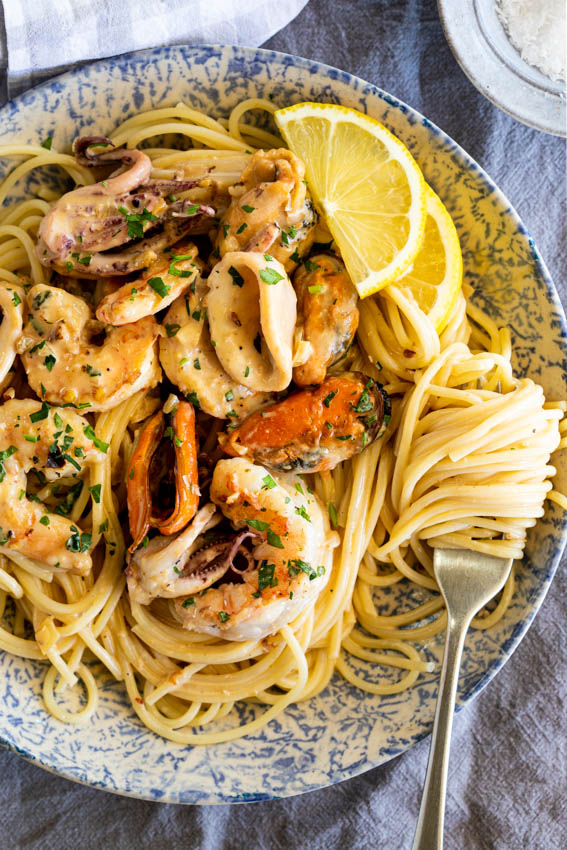

Seafood Pasta Recipe
Home

Seafood Pasta Recipe Description
This seafood pasta with creamy garlic sauce is the perfect dinner recipe, whether you need to get dinner on the table fast or impress guests.
Ingredients
- Seafood: I used shrimp/prawns, calamari, squid heads and mussels. Scallops and clams are also good additions. I wouldn’t necessarily add fish as it can break up too much during tossing but you could always had seared chunks of fish right before serving. Frozen seafood is perfect suitable, just thaw completely and pat dry with paper towels before cooking.
- Butter.
- Fresh garlic.
- Lemon juice.
- White wine.
- Cream.
- Parsley.
- Salt and pepper.
- Chilli flakes (optional).
- Pasta. I like using long pasta for this recipe but any pasta of your choice will work.
Instructions
- Cook the seafood: In a large pan, add a splash of oil and allow to heat up. Season the seafood with salt and pepper then cook in batches until golden brown. The shrimp/prawns should take no more than a minute per side (depending on size) and the calamari and mussels will take only a few minutes to cook. Take care not to overcook the seafood as they will go tough and rubbery. Rather undercook slightly as it will cook a little more while being tossed with the sauce and pasta.
- Make the sauce: Remove the seafood from the pan and set aside. In the same pan, melt the butter and add the garlic and chilli flakes. Cook until fragrant then pour in the lemon juice and wine. Bring to a simmer and allow to reduce by half. Pour in the cream and allow to come to a simmer. Allow to cook for 5 minutes or until the sauce coats the back of a spoon. Add the seafood (and any of its resting juices) and parsley and stir to combine.
- Combine and serve: Toss the sauce with cooked pasta and a splash of the pasta cooking water and toss to coat the pasta. Serve sprinkled with parsley.